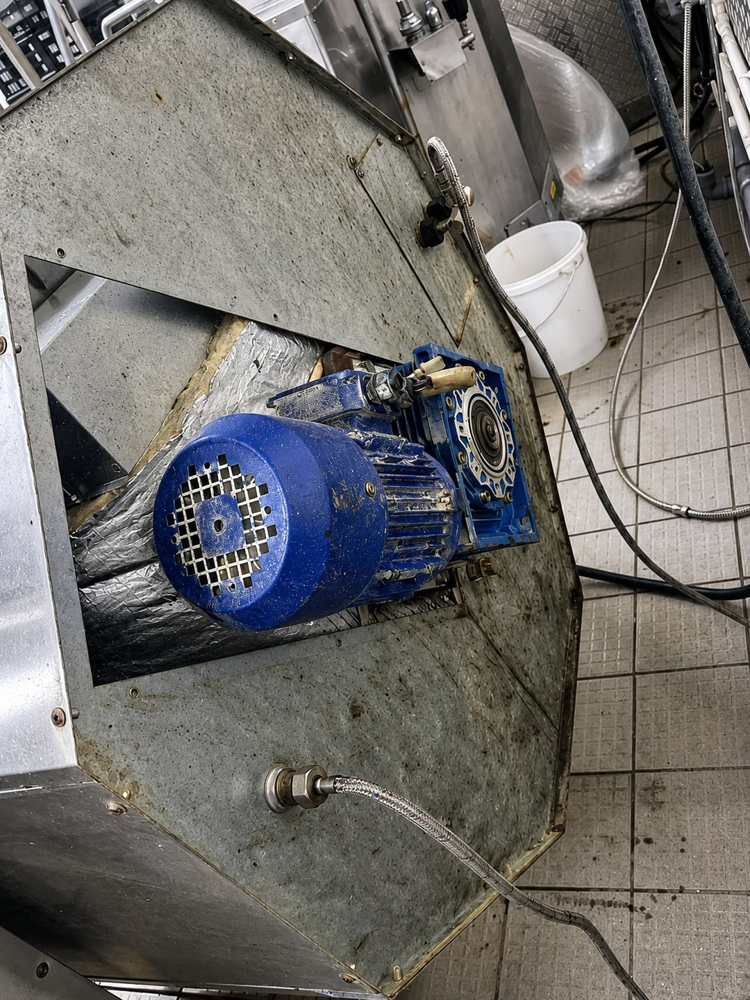

Шаг 1
Проверка свободного хода после безопасной разборки специалистом
Диагностика по симптому
Продолжительный гул без вращения опасен для двигателя. Аппарат выключают и разделяют заклинивание ножевого блока, вал, пусковую цепь и мотор.
Диагностика привода
Проверка идёт от безопасного состояния ножевого блока к муфте, валу, опорам и пусковой цепи двигателя. Повторный запуск до локализации причины может увеличить повреждение.


Изображения обработаны для повышения наглядности. Мелкие геометрические детали могут отличаться от исходных фотографий; для измерений и дефектовки используют фактический осмотр оборудования.
Когда нужно остановить оборудование
Проверка без вскрытия
Немедленно выключить аппарат
После полной остановки проверить правильность установки ножевого блока
Уменьшить загрузку и не проворачивать вал инструментом
Дерево решений
Ножи не двигаются после сборки → установка или заклинивание блока
Стартует рывком → пусковой контур или механическое сопротивление
Без продукта работает, под нагрузкой гудит → перегрузка или механика
Корпус быстро нагревается → прекратить повторные запуски
Матрица причин
| Возможный узел | Граница самопроверки | Проверка инженера |
|---|---|---|
| заклинивание ножевого блока | Проверяется только после безопасного исключения внешних условий. | Измерение и проверка узла по документации конкретной модели. |
| вал и подшипники | Проверяется только после безопасного исключения внешних условий. | Измерение и проверка узла по документации конкретной модели. |
| пусковая цепь | Проверяется только после безопасного исключения внешних условий. | Измерение и проверка узла по документации конкретной модели. |
| ротор двигателя | Проверяется только после безопасного исключения внешних условий. | Измерение и проверка узла по документации конкретной модели. |
Сервисная диагностика
Проверка свободного хода после безопасной разборки специалистом
Измерение пускового контура и тока двигателя
Перелинковка кластера
Модельные особенности не переносятся автоматически на все куттеры.
FAQ
Нет. Ножевой блок острый, а принудительное проворачивание может повредить вал и создать травмоопасную ситуацию.
Возможна чрезмерная загрузка, неподходящий размер продукта, затупленные ножи или механическая проблема, проявляющаяся под нагрузкой.
Да. Повторные попытки запуска при неподвижном роторе могут вызвать перегрев, поэтому аппарат отключают до диагностики.